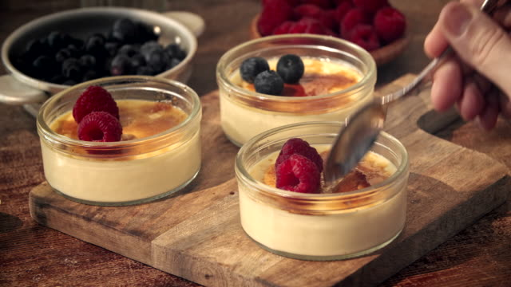

this takes a little bit of time to complete vbut the treat is well worth the wait. You can make custard up to three days in advance.And you can do so much with it
Ingredients
Egg yolk
Sugar
Milk
Vanilla
Flour (all-purpose)
Corn starch
Whisk
Sauce pan
Steps

Step 1
set the two egg yolks in a bowl add some sugar, then whisk together with flour and cornstarch.
Step 2
Heat the milk,vanilla,and the remaining sugar in a medium saucepan over medium-low until it starts to warm up
Step 3
Pour a little bit of warm milk mixture into the egg-mix. Whisk until combined,slowly ass more and more milk into the egg-mix
stirring until all milk is in."temper" the eggyolks(basically slowly warm it up to theright spot without scrambling it).Once all of the milk is in, pour everything back into the sauce bowl.
Step 4
Continue heating the custard slowly until it begins to thicken. Make sure to whisk consistently so you aren't getting it all bumpy or burnt.
Step 5
let the custard come to a boil while whisking and let it boil for about one minute
Step 6
It should look thick an glossy, you will know its been long enough whe you can "draw" a line with a spoon in the custard and it wont fill back up.
Step 7
remove the custard from the heat. Then pass it through a fine sieve into another bowl to remove any lumps.
Step 8
Add butter in small pieces,stir in between until it is all incorporated.
Step 9
cover the custard in a plastic (like saran wrap).Make sure the wrap touches the surface so skin doesn't form.
Step 10
Let the custard cool completely at room temp. if you are going to leave it for a while put in the fridge once it reaches room temp.